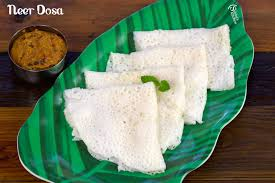

Soft and Lacy Neer Dosa

Neer Dosa is a popular South Indian dish, especially from the coastal region of Karnataka. It's made with a rice-based batter and is thin, soft, and lacy. Here's how you can make this delicious dish at home:
Ingredients:
- For the Batter:
- 1 cup rice (preferably short-grain or dosa rice)
- 1/4 cup grated coconut (optional, for extra flavor)
- Salt to taste
- Water (to adjust consistency)
- For Cooking:
- Oil or ghee for greasing the pan
Instructions:
-
Preparing the Batter:
- Wash the rice thoroughly and soak it for about 4–5 hours or overnight.
- Drain the water and blend the rice along with grated coconut (if using) and a little water into a smooth batter. The batter should be of a thin consistency, almost like a pancake batter.
- Add salt to taste and mix the batter well. Let it rest for 15 minutes.
-
Cooking the Neer Dosa:
- Heat a non-stick tava or griddle on medium heat.
- Grease the pan lightly with oil or ghee.
- Pour a ladleful of the batter onto the hot griddle and quickly spread it in a circular motion to form a thin layer. The dosa should be lacy and slightly translucent.
- Cook for 1-2 minutes. Neer dosa does not require flipping. Once the edges start to lift, it’s ready to serve.
- Repeat the process with the remaining batter, greasing the pan lightly each time.
-
Serving:
- Serve the neer dosas hot with coconut chutney, vegetable curry, or sambar.
- They are best enjoyed fresh and soft!
Enjoy!
Neer Dosa is a light and healthy meal, perfect for breakfast or dinner. Enjoy this traditional dish from South India with your favorite chutneys or curry! 😊